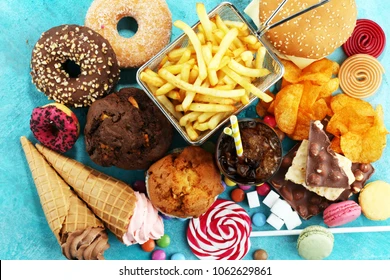
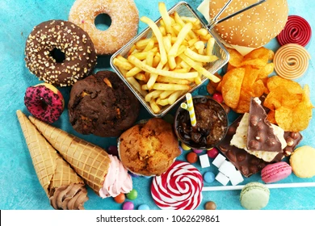

There are three main ways school-age programs promote social and emotional competence (Crosson-Tower, 2003): Teaching to recognize and deal with emotions. Teaching to recognize and solve social problems. Supporting children as they make and keep friends.